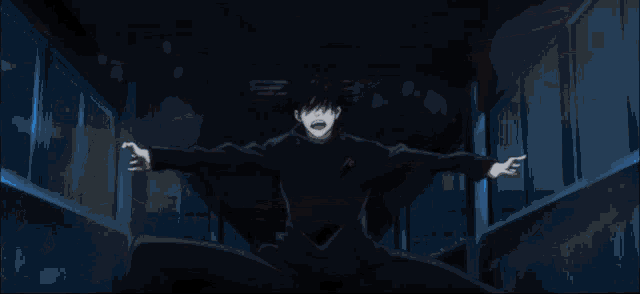
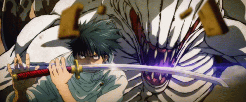

Top 10 Feiticeiros mais fortes da Era Moderna em Jujutsu Kaisen
Megumi Fushiguro
Megumi Fushiguro é um feiticeiro jujutsu da era moderna, portador das 10 sombras e estudante em uma escola de jujutsu
|

|
10 Sombras: É uma técnica herdade pelos membros do clã Zenin, com ela o usuário possui acesso a 10 diferentes shikigamis que podem ser usados em batalha.
|
Hiromi Higuruma
Hiromi Higuruma é um feiticeiro jujutsu da era moderna, tendo como principal habilidade sua expansão de domínio

|
Juiz: Hiromi possui uma técnica que faz com que ele consiga conjurar um grande shikigami com um corpo negro contendo 3 pontos esbugalhados que agem como dois braços e uma perna.
|
Kinji Hakari
Kinji Hakari é um feiticeiro jujutsu que foi expulso da escola de jujutsu por seus ideais não baterem com o alto escalão da escola

|
Trem do Amor Puro Privado: Essa é a Técnica Inata de Kinji Hakari. Ele normalmente aplica essa técnica por meio da Expansão de Domínio.
|
Suguru Getou
Suguru Getou foi o principal antagonista do filme Jujutsu Kaisen 0 e no passado foi um amigo muito próximo de Satoru Gojou

|
Manipulação de Maldições: Suguru Getou é capaz de de armazenar maldições após derrota-lás, tornando-as suas. Caso a maldição seja pelo menos 2 graus abaixo do seu, ele pode absorve-lá sem a necessidade de um confronto.
|
Maki Zenin
Maki Zenin é uma feiticeira jujutsu que não possui energia amaldiçoada, portando foi capaz de desenvolver a Restrição Celestial

|
A pequena quantidade de energia amaldiçoada que Maki possuía estava impedindo sua Restrição Celestial. Em troca de escapar completamente da energia amaldiçoada, Maki recebeu um "corpo de aço".
|
Fumihiko Takaba
Fumihiko Takaba é um feiticeiro jujutsu que antes de começar a usar energia amaldiçoada foi um comediante

|
Comediante: essa técnica consiste em tudo o que takaba achar engraçado, acaba se tornando realidade. Pórem o mesmo não faz ideia disso.
|
Yuki Tsukumo
Yuki Tsukumo é uma feiticeira jujutsu que não faz nada mas é forte porque sim e invoca buracos negros

|
Fúria Estelar: A técnica inata de Yuki permite que ela conceda massa virtual para si mesma e seu shikigami, Garuda.
|
Yuta Okkotsu
Yuta Okkotsu possui uma tecnica de Ctrl + C Ctrl + V e beija maldições
|

|
Rika: O espírito amaldiçoado que permanece com Yuta depois que Rika Orimoto faleceu. Ela serve como armazenamento externo para as técnicas amaldiçoadas e ferramentas amaldiçoadas de Yuta. Yuta tem um controle muito maior sobre essa versão de Rika, mas essa maldição mantém a mesma natureza imatura e protetora que ela tinha antes.
|
Satoru Gojou
Satoru Gojo é o feiticeiro jujutsu mais poderoso dos tempos atuais mas morreu que nem figurante nas mãos do criador da obra e do ryomen roteiro

|
Ilimitado: No nível básico, Ilimitado é uma técnica inata que é derivada da família Gojo. Esta técnica concede aos seus usuários controle absoluto sobre o espaço através da manipulação de energia amaldiçoada em um nível atômico, resultando em múltiplos resultados e técnicas subsequentes dentro da capacidade geral. Com a manipulação do espaço como apenas o nível básico da técnica, Ilimitado tem três formas padrão e uma "não-padrão" além desta.
|